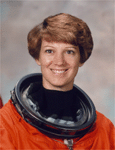

Lyndon B. Johnson Space Center
Houston, Texas 77058
|
National Aeronautics and Space Administration Lyndon B. Johnson Space Center Houston, Texas 77058 |
 |
Biographical Data |
||
Eileen Marie Collins (Colonel, USAF, RET.)
NASA Astronaut (FORMER)
PERSONAL DATA: Born November 19, 1956, in Elmira, New York. Married. She enjoys running, golf, hiking, camping, reading, photography, astronomy.
EDUCATION: Graduated from Elmira Free Academy, Elmira, New York, in 1974; received an associate in science degree in mathematics/science from Corning Community College in 1976; a bachelor of arts degree in mathematics and economics from Syracuse University in 1978; a master of science degree in operations research from Stanford University in 1986; and a master of arts degree in space systems management from Webster University in 1989.
SPECIAL HONORS: Defense Superior Service Medal, Distinguished Flying Cross, Defense Meritorious Service Medal, Air Force Meritorious Service Medal with one oak leaf cluster, Air Force Commendation Medal with one oak leaf cluster, Armed Forces Expeditionary Medal for service in Grenada (Operation Urgent Fury, October 1983), French Legion of Honor, NASA Outstanding Leadership Medal, NASA Space Flight Medals, Free Spirit Award, and the National Space Trophy.
EXPERIENCE: Collins graduated in 1979 from Air Force Undergraduate Pilot Training at Vance AFB, Oklahoma, where she was a T-38 instructor pilot until 1982. From 1983 to 1985, she was a C-141 aircraft commander and instructor pilot at Travis AFB, California. She spent the following year as a student with the Air Force Institute of Technology. From 1986 to 1989, she was assigned to the U.S. Air Force Academy in Colorado, where she was an assistant professor in mathematics and a T-41 instructor pilot. She was selected for the astronaut program while attending the Air Force Test Pilot School at Edwards AFB, California, from which she graduated in 1990.
She has logged over 6,751 hours in 30 different types of aircraft. Collins retired from the Air Force in January 2005.
NASA EXPERIENCE: Selected by NASA in January 1990, Collins became an astronaut in July 1991. Initially assigned to Orbiter engineering support, Collins has also served on the astronaut support team responsible for Orbiter prelaunch checkout, final launch configuration, crew ingress/egress, landing/recovery, worked in Mission Control as a spacecraft communicator (CAPCOM), served as the Astronaut Office Spacecraft Systems Branch Chief, Chief Information Officer, Shuttle Branch Chief, and Astronaut Safety Branch Chief. Collins served as pilot on STS-63 (February 3-11, 1995) and STS-84 (May 15-24, 1997), and was the commander on STS-93 (July 22-27, 1999) and STS-114 (July 26 to August 9, 2005). A veteran of four space flights, Collins has logged over 872 hours in space. Collins retired from NASA in May 2006.
SPACE FLIGHT EXPERIENCE: STS -63 Discovery (February 3-11, 1995) was the first flight of the new joint Russian-American Space Program. Mission highlights included the rendezvous with the Russian Space Station Mir, operation of Spacehab, the deployment and retrieval of an astronomy satellite, and a space walk. Collins was the first woman pilot of a Space Shuttle.
STS -84 Atlantis (May 15-24, 1997) was NASA's sixth Shuttle mission to rendezvous and dock with the Russian Space Station Mir. During the flight, the crew conducted a number of secondary experiments and transferred nearly 4 tons of supplies and experiment equipment between Atlantis and the Mir station.
STS -93 Columbia (July 23-27, 1999) was the first Shuttle mission to be commanded by a woman. STS -93 highlighted the deployment of the Chandra X-Ray Observatory. Designed to conduct comprehensive studies of the universe, the telescope has enabled scientists to study exotic phenomena such as exploding stars, quasars, and black holes. On STS-93, Collins was the first woman Shuttle Commander.
STS -114 Discovery (July 26-August 9, 2005) was the Return to Flight mission during which the Shuttle docked with the International Space Station and the crew tested and evaluated new procedures for flight safety and Shuttle inspection and repair techniques. After a 2-week, 5.8 million mile journey in space, the orbiter and its crew of seven astronauts returned to land at Edwards Air Force Base, California.
MAY 2006
This is the only version available from NASA. Updates must be sought direct from the above named individual.